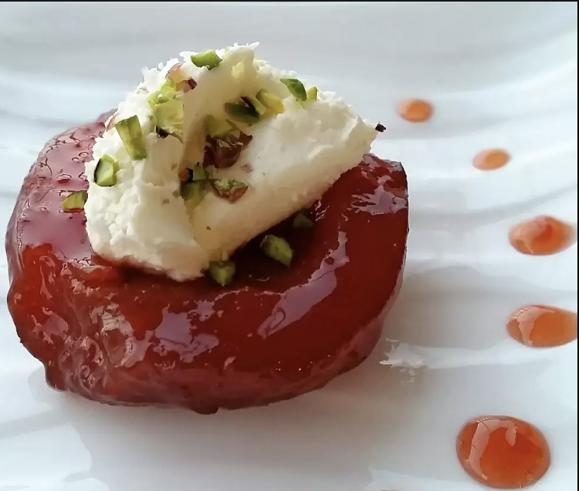
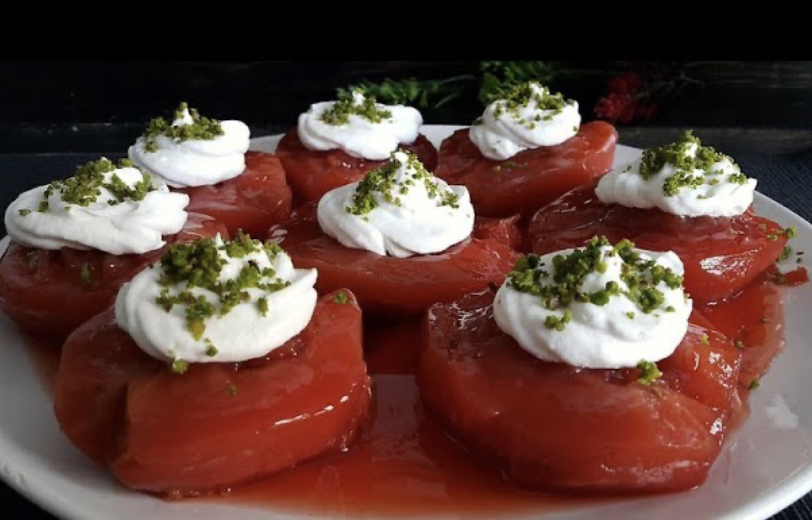
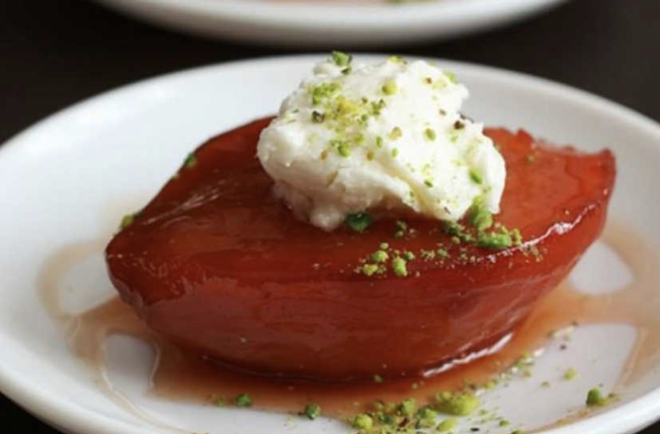

ayva tatlısı TARİFİ



ayva tatlısı Tarifi İçin Malzemeler
- 3 adet ayva
- 3’er yemek kaşığı toz şeker
- 1 adet çubuk tarçın
- 10-12 adet karanfil
- Yarım su bardağı su
Hazırlık aşamasında ayvaların kararmaması için:
- 1 adet limon
- 1 lt kadar su
Servis için:
- Kaymak
- File antep fıstığı
yapılışı:
- Ayva tatlısı hazırlamak için ilk olarak derince bir kaba su doldurun ve içerisine limonu sıkın.
- Ayvaları ikiye bölerek çekirdeklerin bulunduğu kısmı çıkartın ve ayvanın kabuğunu soyun.
- Bu aşamada çıkarttığınız çekirdekleri ayrı bir yerde biriktirin, pişirme esnasında tatlımıza renk vermesi için kullanacağız.
- Hazırlamış olduğunuz ayvaları limon suda bekletin, ayvaların kararmaması için bu önemli.
- Tüm ayvalar için aynı işlemi yaptıktan sonra pişirme kabınıza ayvaların orta kısımları üstte kalacak şekilde yerleştirin.
- Tarçın çubuğunuzu, karanfilleri ve ayva çekirdeklerinin tamamını tencereye ekleyin.
- Ayvaların her birinin üzerine bir kahve fincanı toz şekeri dökün.
- Suyu da tencereye ekledikten sonra tencerenin kapağını kapatarak su kaynayana kadar orta ateşte, kaynadıktan sonra da en küçük ocağınızda kısık ateşte 1-1,5 saat kadar pişirin.
- Ayvalar rengini aldıktan ve yumuşadıktan sonra ocaktan alabilirsiniz.
- Tatlıları servis kabınıza alın ve 3-4 saat kadar soğuması için bekletin.
- Servis ederken kalan şerbetinden ayvaların üzerine gezdirmeyi unutmayın.
- Kaymak ve Antep fıstığı ile süsledim siz tercihlerinize göre süsleyebilirsiniz.
- Benim kullandığım ayvalar tatlı için çok uygun değillerdi, ilk çıkan ayvaların bu tatlı için daha iyi olduğunu okumuştum. Tatlının rengi 1. saatin sonuna doğru değişti, ilk önce ayvalardan dolayı renginin değişmeyeceği düşündüm ama sonrasında kaynayan su pembeleşti ve ayvaların rengi kırmızıya döndü.
- Tereddüt ile başladığım ayva tatlısının bir iki kare fotoğraf aldıktan hemen sonra tamamı tükendi.. Eşim ve ablam çok beğendiler. Benden de tam not aldı. Ayva tatlısı tarifini kesinlikle denemenizi isterim. Şimdiden afiyet olsun..